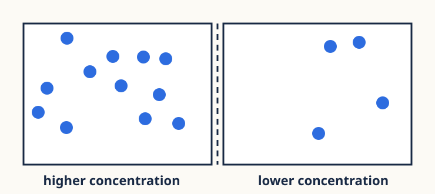
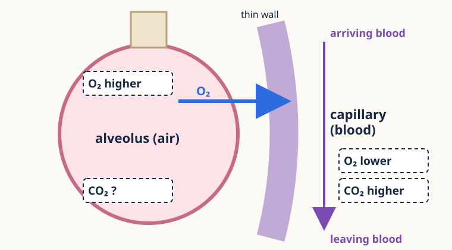
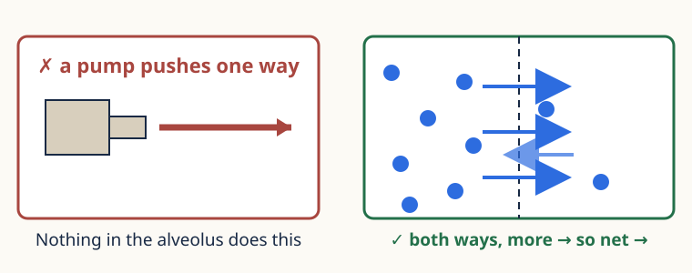

Support cards
Check yourself, or use the card your teacher gives you. It helps with one step; the thinking is still yours.
Which card? Arrows the same way → A · not sure which side is higher → G · wrote “pump”, “push” or “wants” → S · thin wall explained by “space” → W · chain stops before “faster exchange” → C · mixed up the breathing words → X

Card G · Gradient
Count. Label the side with more higher, the other lower. Draw the net arrow.
Recheck: boxes with 9 and 3, no labels. Label them; draw the net arrow.

Card A · Arrows
O₂ is drawn. Arriving blood has more CO₂. Add the CO₂ arrow; say why it points the other way.
Recheck: blank diagram, CO₂ arrow only, with its reason.

Card S · Self-moving?
Nothing pumps or pushes. Frame: Particles move randomly both ways; more move from ___ to ___ because ___.
Recheck: draw CO₂’s net arrow and name the process.
Card W · Wrong match
Each feature has its own job: thin wall ↔ distance · many alveoli ↔ area · moist ↔ dissolve. Rewrite only the wrong chain.
Recheck: does a thicker barrier change distance or area? Why?
Card C · Chain stops
Fill the boxes: thin wall → effect on diffusion? → effect on exchange?
Recheck: the many-alveoli chain, no boxes.
Card X · Process mix-up
Ventilation: air in and out. Gas exchange: diffusion, alveolus air ↔ blood. Respiration: in cells. Air never becomes blood.
Recheck: which process moves O₂ into the blood?
Write in your book. Show your teacher the recheck before you put the card away.